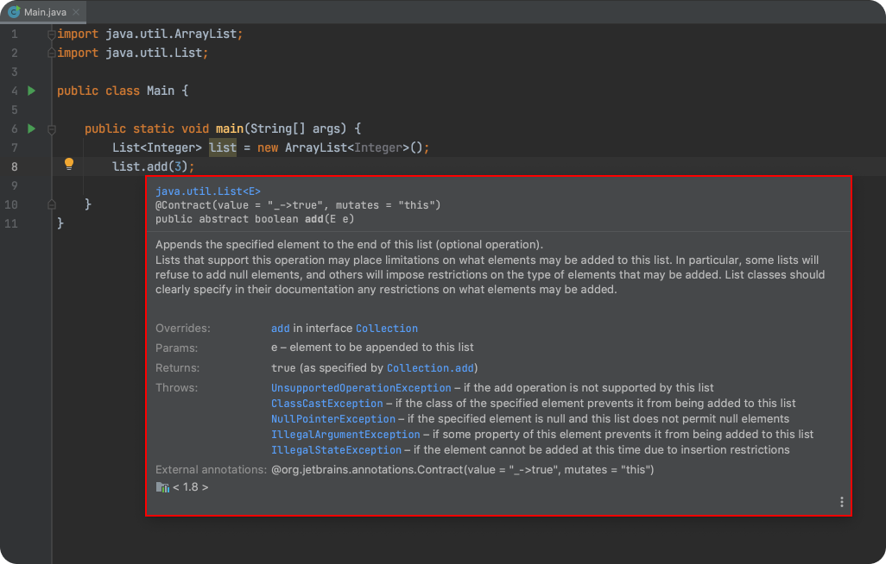
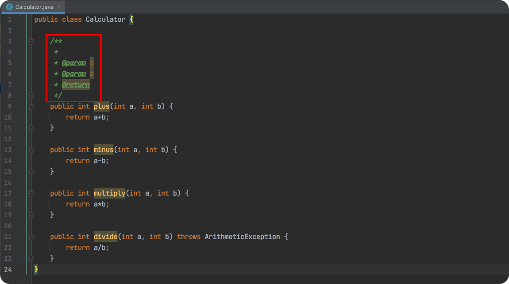
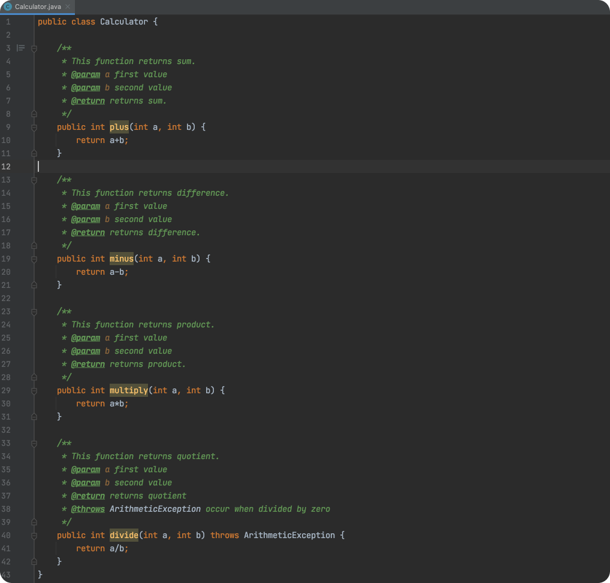
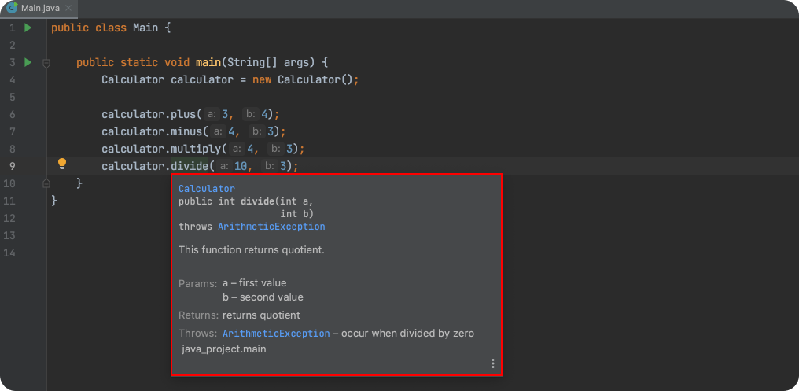
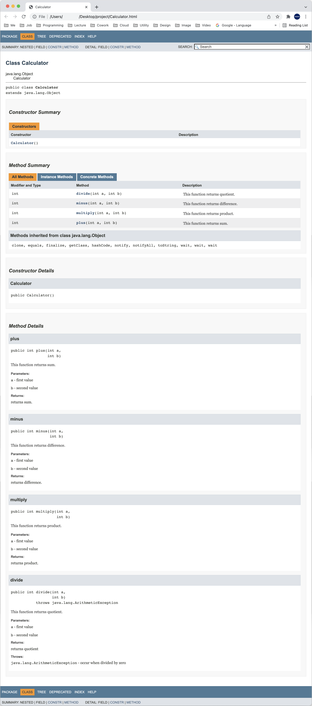

[Java] 주석 잘 작성하기, javadoc 사용법
한 줄 주석
한 줄 주석(Single-line Comment)을 작성할 때는 //을 사용한다.
1 | // This is Single-line Comment |
여러 줄 주석
여러 줄 주석(Multi-line Comment)를 작성할 때는 /* */을 사용한다.
1 | /* |
주석 제대로 작성하기
인텔리J에서 특정 메소드 위에 마우스를 올리면 메소드에 대한 자세한 설명을 확인할 수 있다.

메소드에 대한 설명, 파라미터, 발생할 수 있는 예외 등을 설명하고 있다.
여러 줄 주석(Multi-line Comment)을 사용하여 이러한 설명을 추가할 수 있다. 예를 들어보자.
1 | public class Calculator { |
Calculator의 메소드에 주석을 달아보자. 메소드 위에 /**를 입력하고 Enter버튼을 누르면 기본 템플릿이 자동으로 입력된다.

다음과 같이 메소드에 주석을 달아보자.

이제 Main클래스에서 Calculator클래스를 사용해보자.
1 | public class Main { |
메소드 위에 마우스를 올리면 주석에서 작성한 내용을 확인할 수 있다.

javadoc
JDK에 포함된 javadoc를 사용하면 소스코드를 문서화하고 HTML 등 다양한 포맷으로 export할 수 있다.
사용법은 다음과 같다.
1 | $ javadoc Calculator.java |
다음과 같은 파일들이 생성된다.
1 | Calculator.html index-all.html package-tree.html |
index.html을 열어보자. 주석으로 작성한 설명이 문서화 되어있다.
